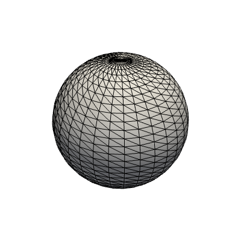

Sphinx PyVista Plot ディレクティブ¶
Sphinxを使ってドキュメントを作成する際に，以下の内容を conf.py に追加することで， .. pyvista-plot ディレクティブを使用して，pyvistaのプロットの静的なイメージを生成することができます．
extensions = [
"sphinx.ext.napoleon",
"pyvista.ext.plot_directive",
]
そうすれば，sphinxのドキュメントファイルの中で，plottingディレクティブを発行することができます．
>>> import pyvista >>> sphere = pyvista.Sphere() >>> out = sphere.plot() 球体¶
以下のように表示されます．
>>> import pyvista
>>> sphere = pyvista.Sphere()
>>> out = sphere.plot()
これはデフォルトの球体¶
プロットディレクティブモジュール．
SphinxドキュメントにPyVistaプロットを含めるためのディレクティブ¶
.. pyvista-plot:: sphinxディレクティブは，インラインの .png イメージを含みます．
プロットのソースコードは，次の2つの方法のいずれかで含まれます．
doctest 構文を使用しています．
.. pyvista-plot:: >>> import pyvista >>> sphere = pyvista.Sphere() >>> out = sphere.plot()
ソースファイルへのパス を directive の引数として指定します:
.. plot:: path/to/plot.py
ソースファイルへのパスが与えられている場合，ディレクティブの内容には，オプションでプロットのキャプションを含めることができます:
.. plot:: path/to/plot.py The plot's caption.
さらに，モジュールをインポートした直後に，（引数なしで）呼び出す関数の名前を指定することもできます．
.. plot:: path/to/plot.py plot_function1
注釈
doctest:+SKIP を含むコードブロックはスキップされます．
注釈
アニメーションは保存されず，最後のフレームのみが表示されます．
オプション¶
`pyvista-plot ディレクティブは，以下のオプションをサポートしています．
- include-sourcebool
ソースコードを表示するかどうかを指定します．デフォルトは
conf.pyの plot_include_source 変数で変更できます．- encodingstr
もし，このソースファイルがUTF8やASCII以外のエンコーディングである場合には，
:encoding:オプションを使ってエンコーディングを指定しなければなりません． このエンコーディングは-*- coding -*-メタコメントを使って推測されることはありません．- contextNone
このオプションが指定された場合，コードは
:context:オプションが指定された以前のすべてのプロットディレクティブのコンテクストで実行されます． これはインラインコードのプロットディレクティブにのみ適用され，ファイルから実行されるものには適用されません．- nofigsbool
指定された場合，コードブロックは実行されますが，数字は挿入されません． これは通常
:context:オプションと一緒に使うと便利です．- captionstr
指定された場合，オプションの引数が図のキャプションとして使用されます．これは，ファイルからプロットが生成された場合，コンテンツで与えられたキャプションを上書きします．
さらに，このディレクティブは， target を除いて， image ディレクティブのすべてのオプションをサポートしています (plot が独自のターゲットを追加するため)． これらのオプションには alt, height, width, scale, align があります．
設定オプション¶
plotディレクティブには，以下の設定項目があります．
- plot_include_source
include-sourceオプションのデフォルト値．
- plot_basedir
ベースとなるディレクトリで，
plot::のファイル名の相対パスを指定します． (Noneまたは空の場合には，ファイル名はそのディレクティブを含むファイルがあるディレクトリに相対します)．- plot_html_show_formats
ファイルへのリンクをHTMLで表示するかどうか．
- plot_template
再構成されたテキストを作成するためのカスタマイズされたテンプレートを提供します．